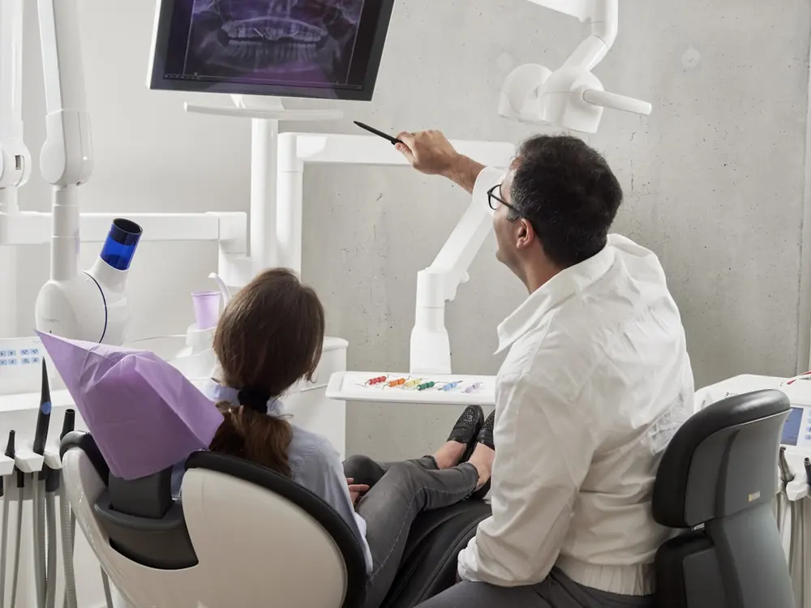
Gülüş Tasarımı
Diş rengi, formu ve yüz uyumu birlikte değerlendirilir.
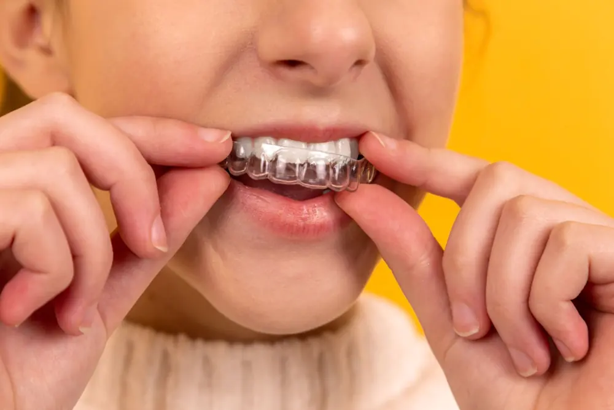
Estetik Diş Tedavisi
Doğal görünümlü estetik diş uygulamaları planlanır.
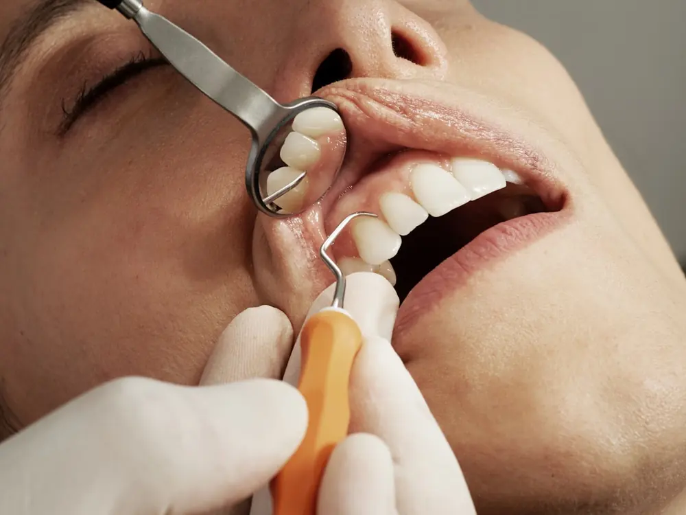
Diş Beyazlatma
Diş rengini açmaya yönelik hekim kontrollü işlemler.

Zirkonyum Diş Kaplama
Doğal görünümlü ve dayanıklı estetik kaplama seçeneği.
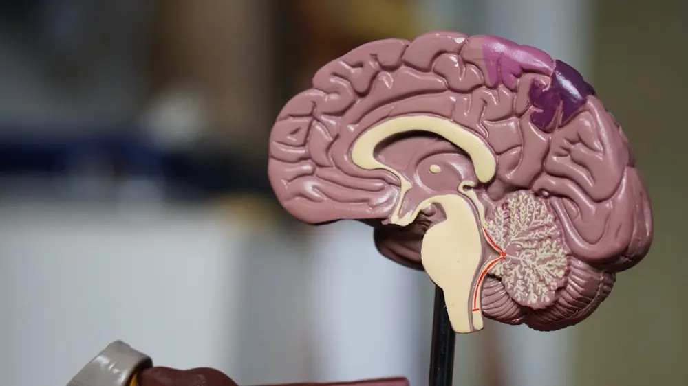
Porselen Kaplama
Estetik ve fonksiyon ihtiyacına göre planlanan porselen kaplama uygulaması.
Porselen Lamina
Ön dişlerde ince porselen yüzeylerle doğal gülüş düzenlemesi.
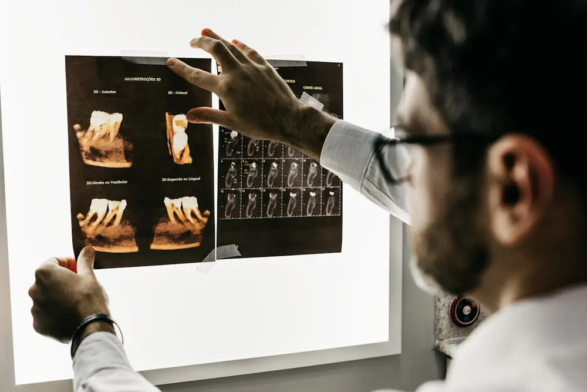
İmplant Üstü Sabit Protezler
İmplantlardan destek alan sabit protez çözümleri.
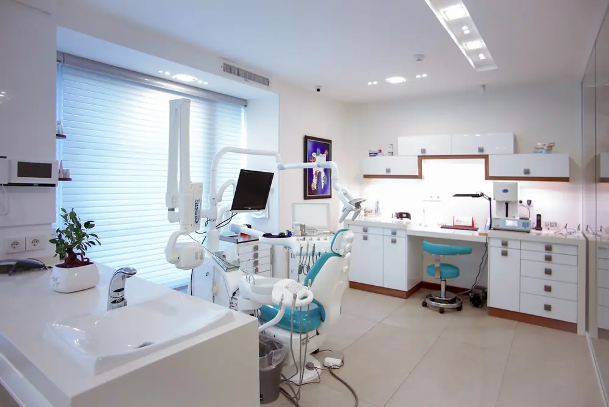
İmplant
Eksik dişlerde implant tedavi planlaması.
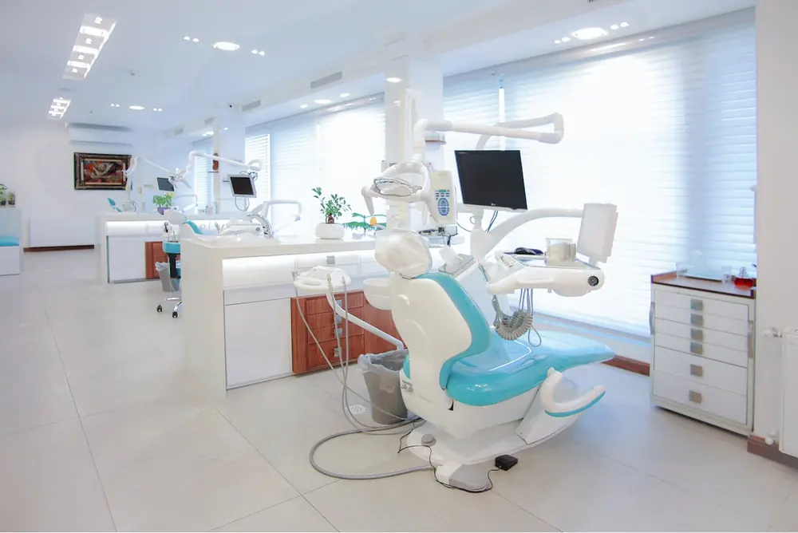
Sinüs Kaldırma
Üst çenede implant için tamamlayıcı cerrahi işlem.
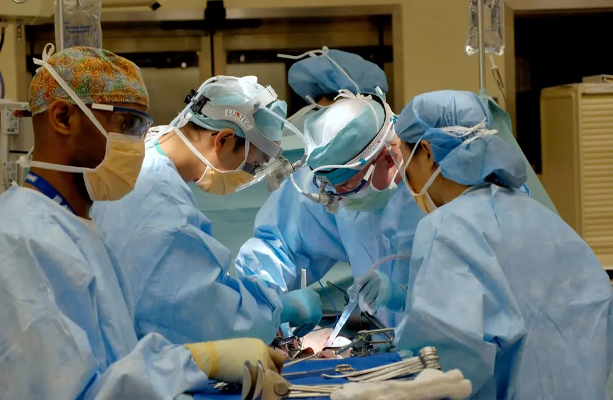
Çocuk Diş Hekimliği
Çocuklarda koruyucu ve yaşa uygun diş tedavileri.
Kompozit Lamina
Ön dişlerde hızlı ve estetik kompozit düzenlemeler.
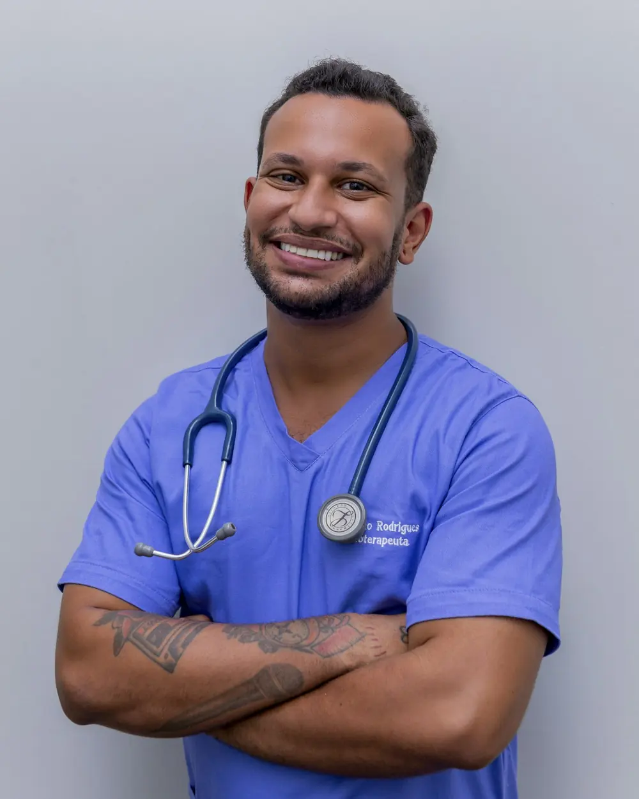
Cerrahi Diş Çekimi
Planlı ve kontrollü cerrahi çekim yaklaşımı.
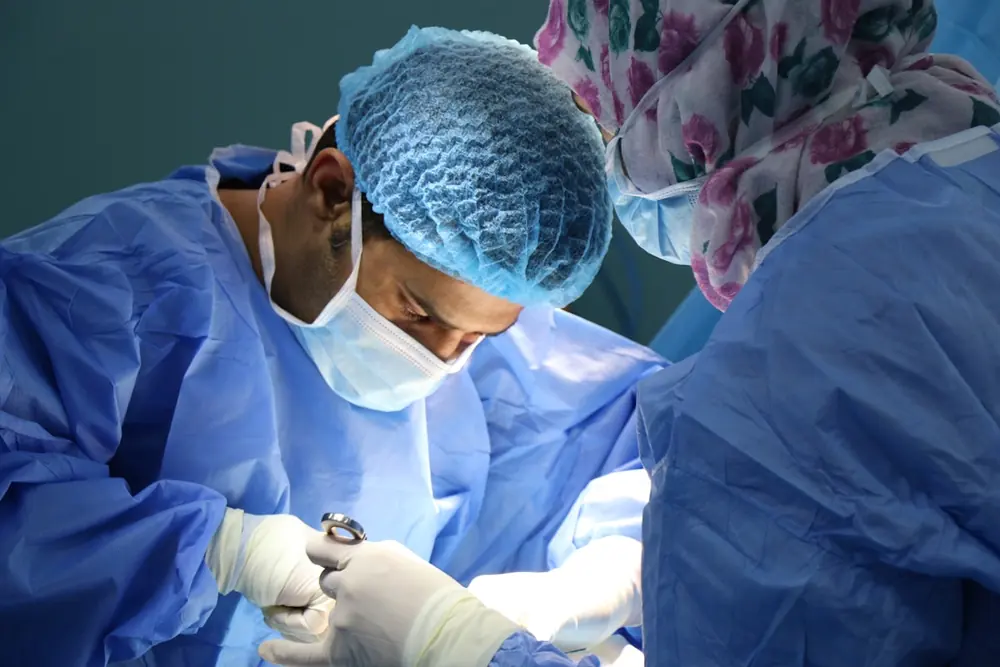
Gömük Yirmi Yaş Diş Çekimi
Gömük dişlerde muayene sonrası cerrahi planlama.
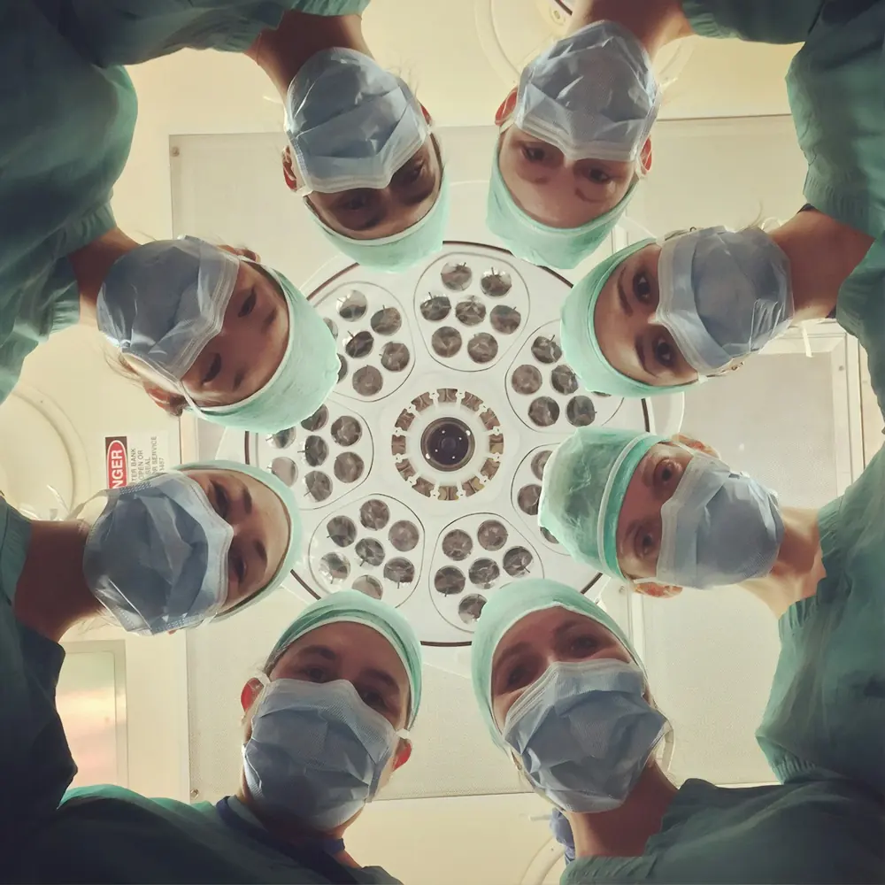
Ortodontik Tedavi
Çapraşık veya yanlış hizalanmış dişlerde tedavi seçenekleri.